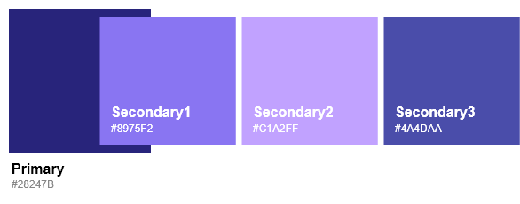
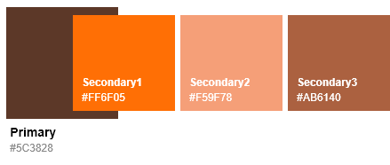

MDS
Multicampus Design System
Color
Principle
러닝클라우드의 7가지 테마별의 컬러가이드를 제공합니다.
컬러가이드가 적용되는 화면에 대해서는 상단 전체 다운로드를 통해 확인할 수 있습니다.
화면별 사용되는 Usage는 제공하지 않으며 자세한 사항은 기본 가이드를 참조하세요.
Basic Color Theme
러닝클라우드의 전용색상으로 Primary와 Secondary 컬러가 있으며, Secondary 컬러는 Primary 컬러에 따라 3가지로 구성됩니다.

Color Themes
러닝클라우드의 컬러테마는 7종으로 표현합니다.
Ultramarine Blue (Basic)
Cobalt Blue
Sea Green
Bright Orange

Cherry Red
Dark Brown

Jet Black
Common Colors
텍스트 버튼과 검색결과, 알림표시 등 주요 색상에 영향을 받지않고 단독적으로 표현합니다.
Component Color (텍스트버튼 외)
Point Color
Contents Color
Mono Color
Basic Color
Skeleton Color
Line Colors
러닝클라우드의 라인 컬러는 6종으로 표현 가능합니다.
Text & Background Colors
배경/이미지에 적합한 텍스트 컬러를 사용하여 가독성을 높입니다.
밝은 배경 위에 올라오는 텍스트의 경우 #222를 사용하며,
Disable의 경우는 #CCC 컬러로 표현합니다.
어두운 배경/이미지 위에 올라오는 텍스트의 경우 #ffffff을 기반으로
Opacity로 Color Scale을 조정합니다. (퍼센트는 위의 정의 참고)
Accessible Colors
변동컬러 중 투톤 컬러를 적용할 경우, Primary1 컬러와 Primary2컬러를 중첩해서 사용하는 것을 지양합니다.